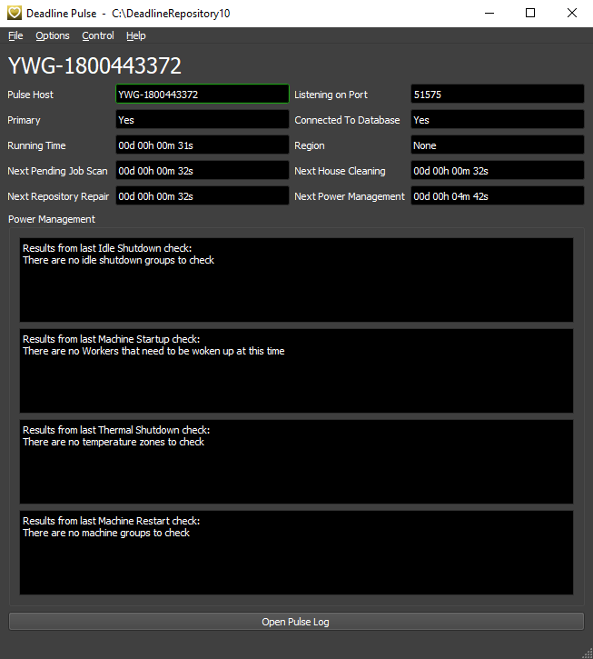
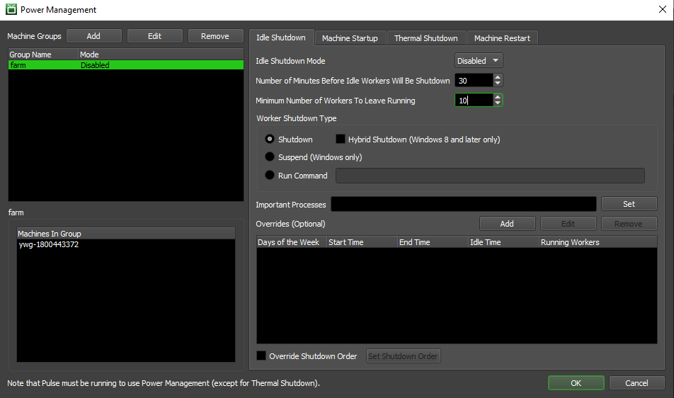
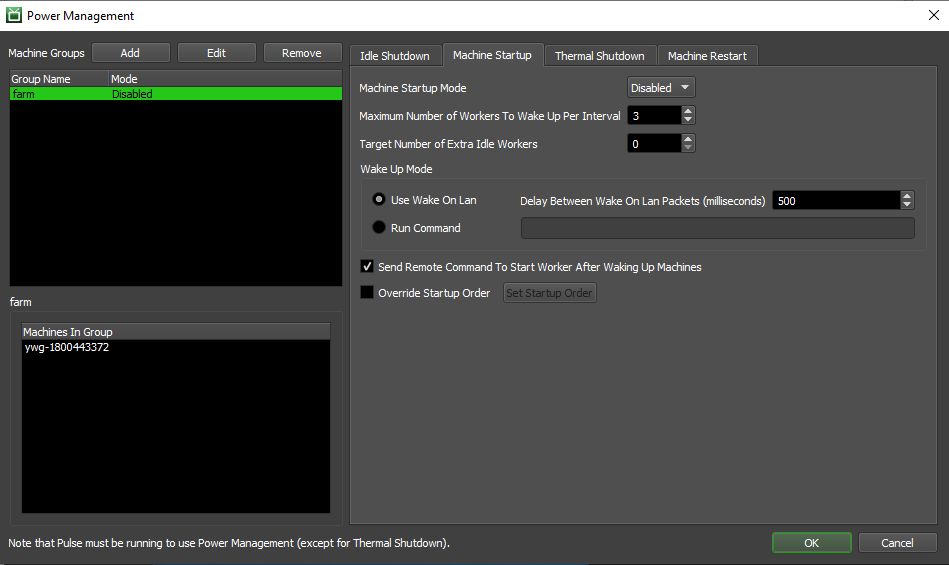
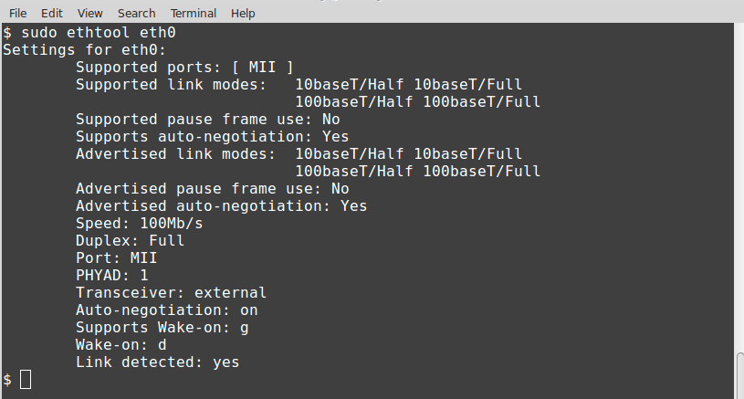
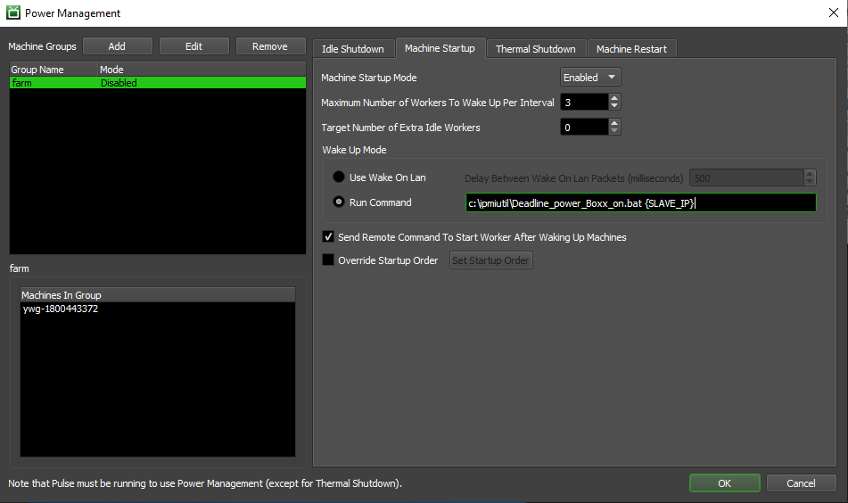
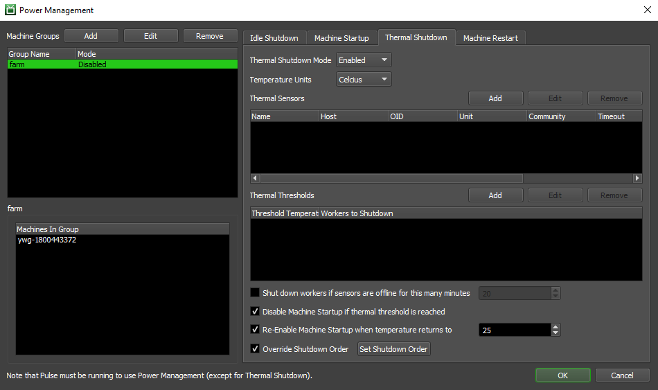
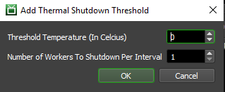
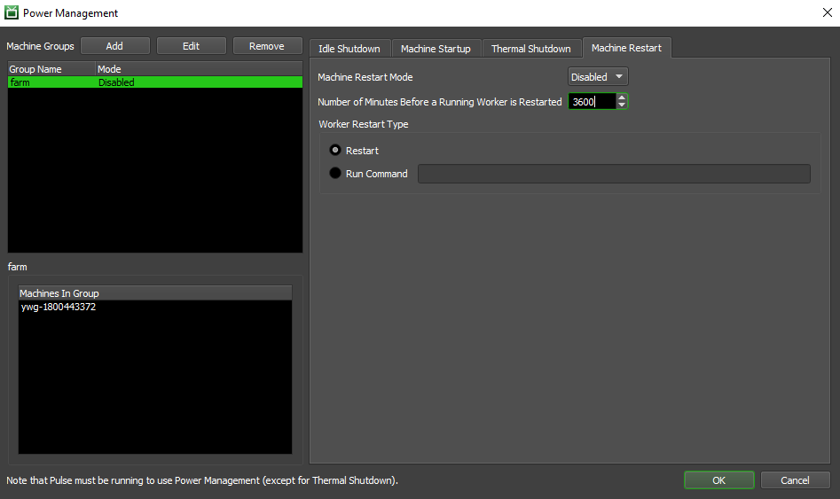

Power Management¶
Note
Some of the topics covered in this page require you to have administrator/root access to initially configure your machines. Please consult your local IT staff if in doubt.
Overview¶
Power Management is a system that automatically controls when machines in the farm start up or shut down, based on the current conditions of the farm. It can start machines if they are required to render jobs in the farm, and it can shut down machines that are no longer needed for rendering. It can also poll an external temperature sensor using SNMP and shut down machines if the server room is too hot. Finally, it can reboot problematic machines or cleanup temporary local machine disk space on a regular basis. Our Power Management Event Plugins can also be used to integrate 3rd party software such as environmental reporting systems. Benefits to using Deadline’s Power Management:
Considerable financial savings in electricity/cooling can be made by actively shutting down machines when not in use!
Extend machine longevity (wear and tear) by shutting down machines when not in use.
Protect machines from a thermal outrage in your server room by auto sensing and shutting down machines.
Regularly restart machines to clean up temporary working space.
Running Pulse¶
Power Management is built into Pulse, so Pulse MUST be running for Power Management to work. The only exception for this is the Thermal Shutdown feature. Redundancy for this feature has been built into the Worker applications, so if Pulse isn’t running, you’re still protected if the temperature of your server room gets too hot (see caveat in Thermal Shutdown section).
See the Pulse documentation for more information about running and configuring Pulse.
Configuration¶
Power Management can be configured from the Monitor by selecting ‘Tools’ -> ‘Configure Power Management’. You will need to be in Power User mode for this, if you are not part of a User Group that has access to this feature.
Machine Groups are used by Power Management to organize Worker machines on the farm, and each group has four sections of settings that can be configured independently of each other. To add a new Machine Group, simply click the Add button in the Machine Group section.

Power Management Group Settings:
Group Name: The name with which the Power Management Group will be identified.
Group Mode: Whether this particular Group is enabled or disabled.
Include All Workers in this Group: If enabled, all Workers will be included in this group. Note that you cannot override the Worker order for the Power Management features if this is enabled.
Unassigned Workers: The Workers that will not be part of this Group.
Workers In Group: Workers that will be part of this Group.
To edit the Power Management settings within a group, simply click on the group in the Machine Groups list.
Idle Shutdown¶
Idle Shutdown is a system that forces Workers to shutdown after they have been idle for a certain period of time. This can be used to save on energy costs when the render farm is idle, without having to shutdown machines manually. Combining this feature with Wake-On-Lan will ensure that machines in the render farm are only running when they are needed.
You can split the idle time period between a Daytime period and an Evening period. This is useful because in most cases, you want most of your machines to stay on during the workday, and then shutdown during the evening when there are no renders left. In addition, you can also specify exceptions to these two periods, which means (for example) you could have different idle periods for the weekend.
Please note that specific configuration should be done for Linux machines. See Rebooting Linux Nodes for more details.
Idle Shutdown Settings:
Idle Shutdown Mode: Select Disabled, Enabled, or Debug mode. In Debug mode, all the checks are performed as normal, but no action is actually taken.
Number of Minutes Before Idles Workers Will be Shutdown: Self explanatory.
Minimum Number of Workers to Leave Running: The minimum number of Workers to keep running at all times.
Worker Shutdown Type: The method that will be used to shutdown Idle Workers:
Shutdown: Power off the machine using the normal shutdown method.
Hybrid Shutdown: If enabled, the machine is prepared for a fast startup. This option only works on Windows 8 machines and later. Note, Machine Startup via WOL does not support waking a Windows 8 or later machine which has entered the Hybrid Shutdown state (S4).
Suspend: Suspends the machines instead of shutting them down. Only works for Windows Workers.
Run Command: Use this method to have the Worker run a command when attempting to shutdown a Worker.
Important Processes: If the Worker has any of these processes running, it will not shutdown.
Overrides: Define overrides for different days and times. Simply specify the day(s) of the week, the time period, the minimum number of Workers, and the idle shutdown time for each override required. For example, if more machines are required to be running continuously for Friday evening and Saturday afternoon, this can be accomplished with an override.
Override Shutdown Order: Whether or not to define the order in which Workers are shutdown. If disabled, Workers will be shut down in alphabetical order. If enabled, use the Set Shutdown Order dialog to define the order in which you would like the Workers to shut down. Note that this feature is not available if the Power Management Group is configured to include all Workers.
Machine Startup¶
This is a system that allows powered-down machines to be started automatically when new Jobs are submitted to the render farm. Combining this feature with Idle Shutdown will ensure that machines in the render farm are only running when they are needed. If Worker machines support it, Wake On Lan (WOL) or Intelligent Platform Management Interface (IPMI) commands can be used to start them up after they shutdown.
Note that if machines in the group begin to be shutdown due to temperature, this feature may be automatically disabled for the group to prevent machines from starting up and raising the temperature again.
Machine Startup Settings:
Machine Startup Mode: Select Disabled, Enabled, or Debug mode. In Debug mode, all the checks are performed, but no action is actually taken.
Maximum Number of Workers to Wake Up Per Interval: The maximum number of machines that will be started in a given Power Management check interval. The interval itself can be configured in the Pulse section of the Repository Options.
Target Number of Extra Idle Workers: The target number of extra idle Workers. Power Management will attempt to start enough machines to have this many extra Workers available on top of what is currently needed by jobs on the Repository. Default is 0. This setting ensures that a number of extra idle Workers are always available, essentially acting as a “buffer” for machine startup. It can be used to ensure that there is always at least X machines available (from a given power management group) to start a Job immediately. This can be important to give users the sense that the farm is always ready to render their jobs.
Wake Up Mode: This determines how the machines will be woken up. See the available Wake Up Modes below for more information.
Send Remote Command To Start Worker After Waking Up Machines: If enabled, a remote command to start the Worker will be sent after waking up the machines. This ensures that the Worker starts on the machine after it has woken up. This should only be disabled if the Worker will start another way (for example, by Worker Scheduling).
Override Startup Order: Whether or not to define the order in which Workers are started up. If disabled, Workers will be started in alphabetical order. If enabled, use the ‘Set Startup Order’ dialog to define the order. Note that this feature is not available if the Power Management Group is configured to include all Workers.
Wake Up Modes:
Use Wake On Lan: Wake On Lan packets will be sent to machines to wake them up.
Delay Between Wake On Lan Packets (seconds): The number of seconds between WOL packets when multiple Worker machines are being started. This can be used to add a delay between machine startups.
Run Command: This is primarily for IPMI support. If enabled, Pulse will run a given command to start Worker machines. This command will be run once for each Worker that is being woken up. A few tags can be used within the command:
{WORKER_NAME} is replaced with the current Worker’s hostname. Support for {SLAVE_NAME} is deprecated and will be removed in a future release.
{WORKER_MAC} is replaced with the current Worker’s MAC address. Support for {SLAVE_MAC} is deprecated and will be removed in a future release.
{WORKER_IP} is replaced with the current Worker’s IP address. Support for {SLAVE_IP} is deprecated and will be removed in a future release.
Please see our dedicated section on IPMI for further configuration information.
WOL¶
Wake-on-LAN (WoL) is an ethernet or token ring computer networking standard that allows a computer to be turned on or awakened by a network message. In order to use Deadline’s Machine Startup functionality with WOL, you will need an understanding of how WOL can be enabled and configured to successfully send a Magic Packet to startup a machine. Here are some notes to consider when configuring WOL:
WOL is supported across Windows, Linux and macOS.
WOL Packets are sent to the MAC addresses that Deadline has on file for each of the Workers. If your Workers have multiple Ethernet ports, the Worker may have registered the wrong MAC address, which may prevent WOL from working properly. If this is the case, you will have to manually set MAC Address overrides for the Workers that are having this problem, which can be done through the Worker Settings dialog.
By default, the WOL packet is sent over UDP ports 7 and 9 (industry standard), but you can change this in the Wake On Lan settings in the Repository Configuration. Make sure there isn’t a firewall or other security software/hardware blocking communication over the selected UDP port(s).
Some machines do not support Wake-on-LAN after they have been disconnected from power (e.g., when power is restored after a power failure). Use of an uninterruptible power supply (UPS) will give protection against a short period without power, although the battery will discharge during a prolonged power cut.
Most 802.11 wireless interfaces do not maintain a link in low power states and therefore cannot receive a magic packet.
Typically, WOL broadcasting of “Magic Packets” is restricted to a VLAN or LAN. However, it can be configured to reach remote machines via a VPN, so called Wake on Internet.
WOL is generally not secure. Some NIC manufacturers do provide a SecureOn Password authentication system, but this has limitations as well.
WOL has no reporting mechanism to explain what machine was responsible for starting up a machine. However, Deadline’s Power Management log history will report if it is responsible for sending the WOL signal.
Each receiving machine’s hardware needs to support WOL for it to work! Both the machine’s motherboard and network card (NIC) must support WOL and be enabled.
On newer machines (to save power on say, a blade chassis) WOL has been removed and IPMI or AMT support is provided instead.
Some routers/switches do not allow WOL broadcasts to pass through or must be configured to allow it. Port Forwarding might be required to be configured on your router.
BIOS Configuration
WOL needs to be enabled in each of your machine’s BIOS. It may already be enabled but you should double-check. Some PC manufacturers provide the option to pre-configure the BIOS settings as the machine is built on ordering; which can be a handy time saver if your about to deploy many machines! Depending on the manufacturer/age of the motherboard, WOL support made be referred to as PCIE Wake or another term used. Don’t forget, it may NOT even be present and be replaced by IPMI instead! Consult your PC manufacturers manual for further information. Here are a couple of example images:
NIC Configuration
WOL will need to be enabled on each of the network adapters which you expect to be exposed and visible to Deadline to target it’s MAC address. Typically, it will just be your main copper network connection. Please consult your specific NIC manufacturers manual for more information. Here are Intel’s configuration instructions and some example images to help:
Linux
Most Linux distributions have a great tool that can check to see if your machine supports WoL and can enable it. On CentOS, open up a terminal and install “ethtool” with the following command:
>>> sudo yum install ethtool
On Ubuntu:
>>> sudo apt-get install ethtool
You can check your compatibility by running:
>>> sudo ethtool eth0
Look for the “Supports Wake-on” section. As long as one of the letters listed is “g”, you can use magic packets for WoL. To enable this option, use the following command:
>>> sudo ethtool -s eth0 wol g
macOS
Open up your System Settings and choose Energy Saver. Under the Options or Power Adapter tab, you should see “Wake for Ethernet” or something similar. This enables Wake-on-LAN.
If you find your Mac sleeps after being woken up by WOL, then you may need to disable Dark Wake, as per these instructions:
As an administrator, edit the following file:
/Library/Preferences/SystemConfiguration/com.apple.Boot.plist.Find the KernelFlags key and update the Dark Wake setting as follows:
<key>Kernel Flags</key> <string>darkwake=0</string>
Reboot your Mac. Wake on LAN should now work.

WOL via Deadline
To support machines which exist on different subnets in Deadline, we first send the magic packet to the Worker’s IP address, as displayed in the Workers Panel in Monitor. For example, 192.168.2.10. Then we send four additional packets by masking each part of the IP. Using the same example, we send the packet to 192.168.2.255, 192.168.255.255, 192.255.255.255, and finally 255.255.255.255. Please note, this only works though if the Worker is using an IPv4 address.
Troubleshooting WOL
Troubleshooting WOL configuration can be difficult. However, many WOL packet sender/sniffer applications are available. For further debugging, packet analyzer tools such as Wireshark can be used to confirm (while the PC is still on) that the magic packet is indeed visible to a particular computer’s NIC. Here are some common WOL tools that can be used to confirm your WOL configuration is working before then testing with Deadline. To test, run the “sender” software on the machine that will send the WOL magic packet (Pulse) and run the “sniffer” (receiving) application on one of your rendernodes you are testing. Use the DNS hostname or IP address of this rendernode and “Send” the Magic Packet and see if it is received (displayed) by the sniffer application. If not, then you need to resolve the software/hardware that is blocking the signal. There are many WOL applications available via the internet. Here are a few handy links:
- WOL Sender/Sniffer:
- Mobile Apps that can send a WOL ‘Magic Packet’:
IPMI / AMT¶
Lights Out Management (LOM) involves the use of a dedicated management channel to control devices. It allows IT to monitor and manage servers and other network equipment by remote control regardless of whether the machine is powered on, or if an operating system is installed or functional. The Intelligent Platform Management Interface (IPMI) is a standardised computer system interface used by IT for out-of-band management of computer systems. It is a way to manage a computer that may be powered off or otherwise unresponsive by using a network connection to the hardware rather than to an operating system or login shell. Typically, this is achieved via a dedicated NIC interfacing with a machine or chassis of blade servers via the BMC, DRAC or RSA. In modern hardware, Wake-On-Lan (WOL) is now replaced by IPMI as a power consumption saving.
IPMI was developed as an industry standard protocol. However, each of the manufacturers have implemented it in slightly different ways! There are also a couple of open-source projects which attempt to wrap and solve these difficulties. Finally, Intel has another solution known as Active Management Technology (AMT):
MegaRAC (SuperMicro, ASUS, Tyan and Intel)
Dell DRAC
HP Integrated Lights-Out (iLO)
IBM Remote Supervisor Adapter (RSA)
Open-source IPMIUtils (BSD 2.0 license)
Open-source IPMITool (BSD 2.0 license)
Intel’s Active Management Technology (AMT)
Each manufacturer will have slightly different IPMI configuration settings in the BIOS of the machine and/or chassis/DRAC in the case of blade servers. Please consult individual manufacturer manuals for specific guidance. Here are some useful instructions for SuperMicro BIOS and Linux configuration of IPMI. Note, that a Management VLAN may be required to successfully send IPMI signals to your machines. SuperMicro provide in-band (IPMICFG) and out-of-band (SMCIPMITool) utilities as well as a GUI (IPMIView) to assist in configuring IPMI on their machines. DELL, IBM and HP (iLO) have equivalent software tools to assist users as well.
The machine(s) running Pulse will send out the IPMI signals if configured in Power Management -> Machine Startup and Idle Shutdown. On each of these Pulse running machines, you will need to install the relevant IPMI software to support all your manufacturer types of machines in your studio. In the following examples, different IPMI toolkits have been used to construct a batch or shell script, which is configured in the PM settings and executed by the Pulse machine. It is recommended to always test that your IPMI script is working correctly outside of Deadline before configuring Power Management.
Examples¶
Windows
For example, if you had a batch file in c:\ipmiutil called Deadline_power_Boxx_on.bat on the Pulse machine that takes the Worker’s IPv4 address as a command line option, your command would look like this:
>>> c:\ipmiutil\Deadline_power_Boxx_on.bat {WORKER_IP}
Here is an example of the Deadline_power_Boxx_on.bat script that transforms a Worker’s IPv4 address. It assumes the last two octets match between the two machines, so if a render node’s IP is 10.1.1.2, then its corresponding power management module is 10.0.1.2.
@ECHO OFF
SET IP=%~1
FOR /F "tokens=3,4 delims=." %%A IN ("%IP%") DO (
ipmiutil reset -u -N 10.0.%%A.%%B -U user -P password
)
Linux
For example, if you had a bash shell script file in /root/scripts/ipmi_control.sh on the Pulse machine that takes the Worker’s IP address as a command line option, swaps the Worker’s IP address for it’s equivalent mgmt vlan IP address, then your commands would look like this:
>>> /root/scripts/ipmi_control.sh {WORKER_IP} on
>>> /root/scripts/ipmi_control.sh {WORKER_IP} off
Here is an example of what /root/scripts/ipmi_control.sh might look like. Note, how the data vlan IP address range 10.2.1.x is swapped out for the dedicated mgmt vlan IP address range 10.2.16.x. This script supports both the shutdown and startup of machines via IPMI:
#!/bin/sh
logfile="/var/log/Thinkbox/Deadline<VERSION>/ipmi_control.log"
worker_ip=$1
echo "`date` : $@" >> $logfile
export LD_LIBRARY_PATH=""
if [[ ! $worker_ip == '10.2.1.'* ]] ; then
echo "$worker_ip is not a valid node IP. Exiting ..."
else
echo "$worker_ip seems to be valid node IP. Continuing ..."
ipmi_ip=`echo $worker_ip | sed 's/10.2.1./10.2.16./g'`
cal_number=`echo $worker_ip | sed 's/10.2.1.//g'`
echo "IPMI node IP should be : $ipmi_ip"
$user=root
$password=calvin
if [[ "$2" == "on" ]] ; then
echo "Launching power on ..."
ipmitool -H $ipmi_ip -U $user -P $password chassis power on >> $logfile 2>&1
elif [[ "$2" == "softoff" ]] ; then
echo "Launching soft power off ..."
ipmitool -H $ipmi_ip -U $user -P $password chassis power soft >> $logfile 2>&1
elif [[ "$2" == "off" ]] ; then
echo "Launching power off ..."
ipmitool -H $ipmi_ip -U $user -P $password chassis power off >> $logfile 2<&1
elif [[ "$2" == "reset" ]] ; then
echo "Launching power reset ..."
ipmitool -H $ipmi_ip -U $user -P $password chassis power reset >> $logfile 2<&1
elif [[ "$2" == "status" ]] ; then
echo "Quering power status ..."
ipmitool -H $ipmi_ip -U $user -P $password chassis power status >> $logfile 2<&1
else
echo "Invalid command. Usage is $0 IP [on|soft|off|reset|status]"
fi
fi
Note
<VERSION> is the Deadline major version, such as: 10.
Thermal Shutdown¶
The Thermal Shutdown system polls temperature sensors and responds by shutting down machines if the temperature gets too high and if optionally configured; will re-enable Machine Startup when the temperature drops below a configurable threshold. The sensors we have used for development/testing are NetTherms and APC Sensors are also known to be compatible. Any network queryable and compliant SNMP v1+ thermal sensor should work here both in-band (OS based) or using out-of-band (firmware based) equipment. Note that the SNMP GET request on a temperature sensor communicates over UDP port 161, so ensure this UDP port is NOT blocked across your network by firewalls or network devices. See the next section on SNMP Sensors for more information on how to find the correct OID for your thermal sensor(s).
Thermal Shutdown settings:
Thermal Shutdown Mode: Select Disabled, Enabled, or Debug mode. In Debug mode, all the checks will be performed, but no action is actually taken.
Temperature Units: The units used to display and configure the temperatures. Note that this is separate from the units that the actual sensors use. Default is Celsius.
Thermal Sensors: The hostname (or IP Address) and OID (Object Identifier) of the sensor(s) in the zone. To add a new sensor, simply click the ‘Add’ button.
Thermal Thresholds: Thresholds can be added for any temperature. When a sensor reports a temperature higher than a particular threshold, the Workers in the zone will respond accordingly. Note that higher temperature thresholds take precedence over lower ones.
Shut down Workers if sensors are offline for this many minutes: If enabled, Workers will shut down after a period of time in which the temperature sensor could not be reached for temperature information. Default is 20 minutes.
Disable Machine Startup if thermal threshold is reached: If enabled, Machine Startup for the current group will be disabled if a thermal threshold is reached.
Re-Enable Machine Startup when temperature returns to: If enabled, this will re-enable Machine Startup when the temperature returns to the specified temperature. Default is 0 Celsius.
Override Shutdown Order: Whether or not to define a custom order in which Workers will be shutdown. If disabled, Workers will be shut down in alphabetical order. If enabled, use the ‘Set Shutdown Order’ dialog to define the order. Note that this feature is not available if the Power Management Group is configured to include all Workers.
Thermal Sensors:
Currently any SNMP v1+ compliant temperature sensor which returns a String, Integer or Gauge value are supported.
Sensor Name: A user definable name for the temperature sensor to add. Default is ‘sensor’.
Sensor Hostname or IP Address: The hostname or ip address of the temperature sensor. Default is BLANK. Typically IP address is used here as most studios do not have DNS configured for 3rd party Thermal Sensors.
Sensor OID (Object Identifier): The OID (Object Identifier) of the temperature sensor. The default OID is for the particular type of sensor we use. See the next section on SNMP Sensors for more information on how to find the correct OID for your thermal sensor(s).
Sensor SNMP Community: SNMP community name of the temperature sensor. If during testing the sensor fails with ‘public’, try using ‘private’. Default is ‘public’. Note, your studio may have a custom defined SNMP Community ‘name’ so please contact your local IT system administrator.
Sensor Reports Temperature As: Select the units that your temperature sensor uses to report the temperature. Default is Celsius.
Sensor Timeout in Milliseconds: The timeout value for contacting the sensor. Default is 1000 milliseconds.
Sensor Testing Temperature: If enabled, the corresponding temperature will always be returned by this sensor. This is useful for testing purposes. Default is 25 Celsius.
Test Sensor: Queries the sensor for the current temperature, and displays it. If the temperature displayed seems incorrect, make sure you have selected the correct unit of temperature above.
If you simply want to test the Thermal Shutdown feature, but you don’t have any thermal sensors to test with, you can enable the Sensor Testing Temperature in the Sensor settings above. When enabled, you don’t need to provide a Sensor Hostname/IP address or Sensor OID, and the test sensor will always return the specified temperature.
Thermal Thresholds:
Threshold Temperature (In Celsius): The threshold temperature for shutdown in Celsius. Default is 0 Celsius.
Number of Workers To Shutdown Per Interval: Number of Workers to be shutdown per interval. Default is 1.
Note, many studios/network administrators use separate VLAN’s to segegrate different types of traffic in their LAN. Typically, data vlan traffic is separated from mgmt vlan traffic, where data traffic would be your normal data/file i/o across your network and mgmt vlan traffic might by your IT/environment monitoring systems, sampling many data points across your different hardware devices ranging from SNMP querying (incl. temperature sensors, file server IOPS, machine status) to more complex IPMI/Intel AMT system startup/shutdown commands. If this is applicable to your studio/network, then please note that as the Pulse (and Worker in failover mode) application will be executing the various PM commands such as probe for SNMP temperature sensors or IPMI machine shutdown/startup, then any machine which will run Pulse (and Worker in failover mode), must reside or bridge both the data vlan and your mgmt vlan so that communication is possible. Note, if your running multiple Pulse instances for redundancy, then they will all need to have the same routable network access. Alternatively, you might consider just placing your thermal sensors onto your data vlan to cover both Pulse and Worker PM querying via SNMP.
SNMP Sensors¶
In order to use Deadline’s Thermal Shutdown functionality, you will need an understanding of how SNMP can be enabled, configured and queried to return the relevant value of a temperature sensor. SNMP versions 1, 2c, 3 are supported by Deadline. However, SNMP v3 authentication options are not currently supported. SNMP was introduced in the 1980’s so don’t be surprised if you are spoilt with choice on which devices you use to query for a temperature in your data center to control which group of machines are shutdown. Consider using multiple temperature sensors via different devices (to provide redundancy), in the case of physical or network communication failure. Also, consider the positioning of your temperature sensors to provide the best possible indicators that a certain chassis of blade servers in a rack position or a certain a/c unit has failed, in the case of directional a/c cooling being used in a server room. Chassis based Blade servers are known for ‘hot-spotting’ in a rack, so measuring the temperature of the chassis baseboard as well as possible individual blade servers is recommended here. You may even find devices such as your APC rack doors are networkable and have temperature sensors built-in to them. Investing in 3rd party temperature sensors is also recommended and supported as long as they are queryable via SNMP and present themselves with an IP address. If your sensors are on a separate Management VLAN, then ensure any machine which runs ‘Pulse’ has routable access to the sensors.
SNMP in-band Sensors¶
Some computers have temperature sensors available via their motherboards. If an SNMP agent is running on these machines, then it can be queried via it’s hostname or IP address. Typically, SNMP is disabled/not installed by default on operating systems. Note, the obvious caveat with in-band SNMP agents that they rely on the machine being powered on, booted up to the OS level and the agent running/queryable across the network. For greater redundancy, it is typical to consider using dedicated hardware temperature sensor devices rather than rely on a server’s uptime for critical server room temperature monitoring. Note, Microsoft has deprecated SNMP in some versions of it’s OS such as Server 2012. This does not mean its not available, just that you have to install it as a feature. SNMP can also be extended by writing a custom MIB file via dedicated OID numbers to expose a temperature sensor that might be available on your local machine. Note, you don’t need to install a SNMP agent to carry out querying via snmpwalk/snmpget. On Linux, you would just need the snmp-utils package. See the SNMP Walk section for more information. Here are some URL links to help you to install the SNMP agent on the different OS:
macOS Install
>>> sudo nano /etc/snmp/snmpd.conf >>> sudo launchctl load -w /System/Library/LaunchDaemons/org.net-snmp.snmpd.plist
SNMP Hardware Devices¶
Here is a non-exhaustive list of some commercial/free SNMP sensors which will work with Deadline. Many other sensors are available, including those already built-in to your machines and other server room equipment.
- Sensor Gateway + Temperature Sensors
- APC NetBotz 200-500
SNMP Walk¶
Before running, you might need to install one or more 3rd party MIB files if you are using a custom device. A MIB file is essentially a database (look-up table) allowing us to identify a specific OID (Object Identifier) for your temperature sensor. Typically, MIB files can be downloaded from a manufacturer’s website. Here’s what a DELL blade chassis baseboard thermal sensor OID number looks like after downloading the DELL specific MIB file:
.iso.org.dod.internet.private.enterprises.dell.server3.baseboardGroup.thermalGroup.temperatureProbeTable.temperatureProbeTableEntry.temperatureProbeReading
.1.3.6.1.4.1.674.10892.1.700.20.1.6
You will need a MIB Browser application to load, view and potentially query the SNMP OID number on your device across your network. SNMPWALK and SNMPGET may already be installed by default on your Linux/macOS machine. Check with your local system administrator or try the following in a terminal on Linux/macOS to verify if it’s available:
>>> whereis snmpwalk
>>> whereis snmpget
Windows equivalent snmpwalk/snmpget command-line tools can be downloaded from the SNMP Soft website.
An example snmpwalk command and result might look like this:
>>> snmpwalk -v1 -c public 192.168.0.10 1.3.6.1.4.1.318.1.1.25.1.2.1.6.1
>>> NET-SNMP-EXTEND-MIB::nsExtendOutputFull."temp" = STRING: 73.2866
where arguments:
-v1: Use SNMP version 1.
-c public: SNMP community string “public” (the usual default name).
192.168.0.10: IP address of the SNMP device or machine that the SNMP device is connected to.
1.3.6.1.4.1.318.1.1.25.1.2.1.6.1: An example OID (an APC temperature sensor connected via port 1 of an AP9631 card). Note, valid OID numbers should start with:
1.3.6.x.
returns:
NET-SNMP-EXTEND-MIB::nsExtendOutputFull.”temp”: Returned OID temperature description string via MIB file: “NET-SNMP-EXTEND-MIB”.
STRING: Returned SNMP value data type.
73.2866: Returned temperature in Fahrenheit.
MIB Browsers¶
Far easier than using the command line SNMP tools; many MIB/SNMP querying GUI based tools exist, which some also include preloaded common MIB files. Here are a few handy links:
Once you have a correctly working temperature sensor, returning a string/integer value which makes sense, it’s time to add the sensor details into Deadline’s Thermal Shutdown dialog and use the ‘Test Sensor’ button to provide final confirmation. Note, that SNMP sensors can sometimes be unavailable on the network so consider the Sensor Timeout in Milliseconds and Shut down Workers if sensors are offline for this many minutes settings in Thermal Shutdown to fine tune control and eliminate false-positive results.
Machine Restart¶
If you have problematic machines that you need to reboot periodically, you can configure the Machine Restart feature of Power Management to restart your Workers for you . Note that if the Worker on the machine is in the middle of rendering a Task, it will finish its current Task before the machine is restarted.
Please note that specific configuration must be done for Linux machines here as well. See Rebooting Linux Nodes for more details.
Machine Restart settings:
Machine Restart Mode: Select Disabled, Enabled, or Debug mode. In Debug mode, all the checks are performed as normal, but no action is actually taken.
Number of Minutes Before a Running Worker is Restarted: The interval, in minutes, at which this group of Workers will be restarted. Default is 10 minutes.
Worker Restart Type: The Worker can either be restarted or will execute a specified command after the set time limit is reached.

{kind=link}
{kind=link}
{kind=link}
{kind=link}
{kind=link}
{kind=link}
{kind=link}
{kind=link}
{kind=link}
{kind=link}
{kind=link}
{kind=link}
{kind=link}
{kind=link}
{kind=link}
{kind=link}
{kind=link}
{kind=link}
{kind=link}
{kind=link}
{kind=link}
{kind=link}
{kind=link}